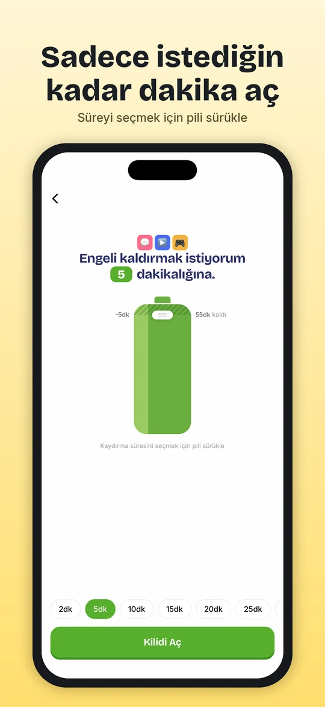

Doomscrolling nasıl bırakılır?
Doomscrolling çoğu zaman bir karar gibi hissettirmez. Bir şeye bakmak için uygulamayı açarsın, yirmi dakika sonra hâlâ akıştasındır. Sonsuz akışa karşı irade genelde kaybeder; işe yarayan, seninle bir sonraki kaydırma arasına küçük bir duraklama koymaktır.
Gerçekten işe yarayan 5 adım
- Seni içine çeken uygulamaları belirle. Genelde iki üç tanedir: sosyal medya, kısa videolar, belki bir oyun.
- Onları yasaklamak yerine bir bütçe ver. Tam yasaklar çoğu zaman birkaç gün içinde kapatılır.
- Uygulamayı açmadan önce kaç dakika istediğine karar ver.
- Bitişi görünür kıl. Net bir durak, “birazdan bırakırım” sözünden çok daha iyi çalışır.
- Yerine yapacağın bir şey hazırla: bir yürüyüş, spor, bir kitabın bir bölümü ya da bir arkadaşını aramak.
Doomscrolling için tasarlanmış bir uygulama engelleyici
ScrollVolt bu adımları tek bir alışkanlığa dönüştürür. Seçtiğin uygulamalar, kaydırdıkça azalan bir kaydırma pilini paylaşır. Onları açmak için pili istediğin dakikaya kadar sürüklersin; sonsuz akışların elinden aldığı “önce karar ver” anı tam olarak budur. Pil sıfırlandığında, gün içinde kendiliğinden şarj olana kadar akışın yerine sakin bir ekran çıkar. Bunun yerine bir odak seansı başlatırsan pil iki kat hızlı dolar. Yani telefonu bırakmanın bir ödülü var. Böylece kaydırma, farkında olmadan yapılan bir refleks olmaktan çıkıp bilinçli bir seçime dönüşür.


Sık sorulan sorular
Doomscrolling nedir?
Faydalı ya da eğlenceli olmaktan çoktan çıkmışken, çoğu zaman kötü haberler ya da kısa videolarla dolu akışlarda durmadan kaydırmak.
Sosyal medyayı tamamen engellemek daha mı iyi?
Bazıları için evet. Ama birçok kişi sabit bir bütçeyi tam yasaktan daha kolay sürdürür, çünkü ceza gibi hissettirmez.
ScrollVolt uygulamalarımı siler ya da gizler mi?
Hayır. Uygulamaların telefonunda kalır; yalnızca pilin bittiğinde ya da bir odak seansı sürerken engellenir.
ScrollVolt’u iPhone’unda dene
ScrollVolt Premium, 3 günlük ücretsiz denemeyle başlayan yıllık bir aboneliktir ve Apple Hesabı ayarlarından dilediğin zaman iptal edebilirsin. Tek seferde ödemeyi mi tercih edersin? Ömür boyu kullanım için tek seferlik bir seçenek de var.
iPhone içinApp Store’dan indir